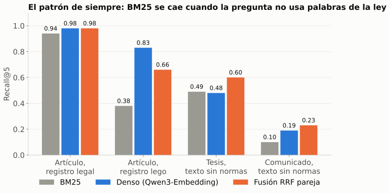
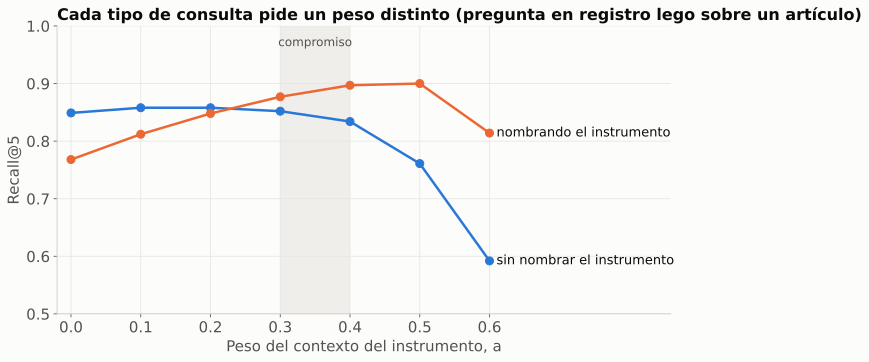
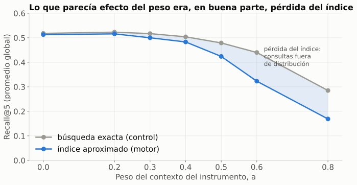
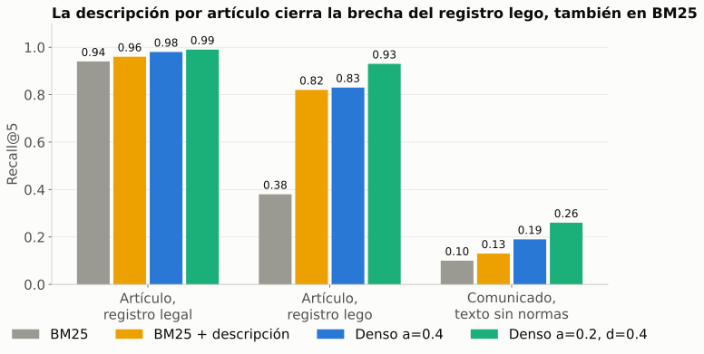
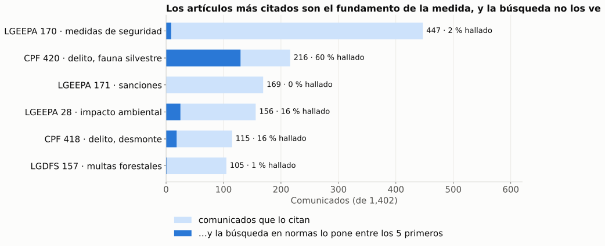
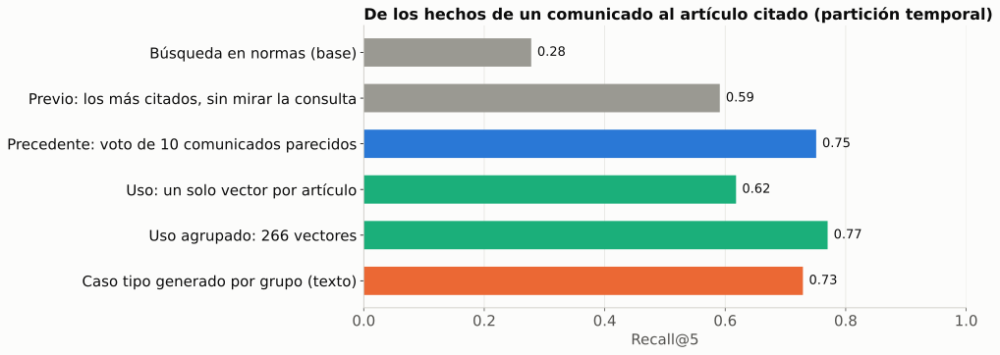
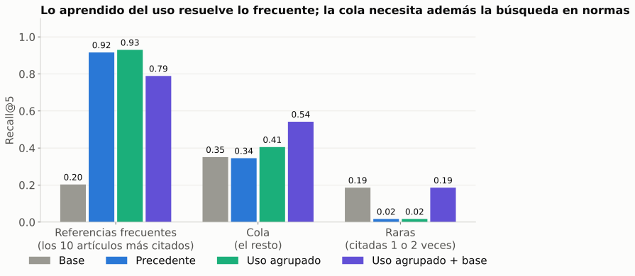
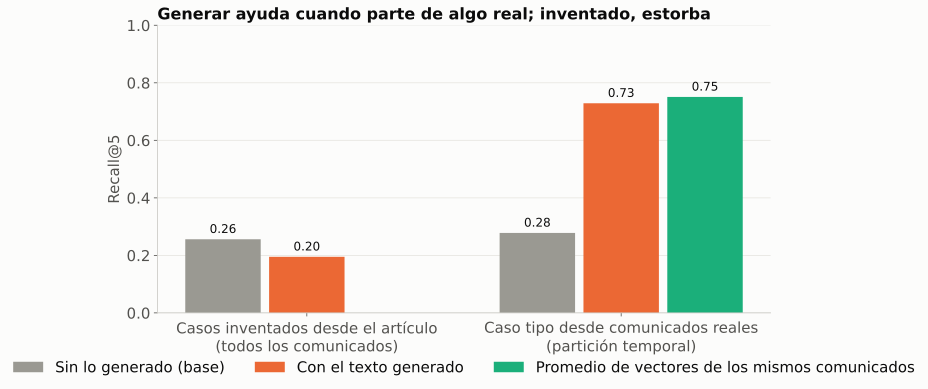

Resultados
Todas las cifras son Recall@5 por disposición sobre el benchmark sintético local, salvo que se diga otra cosa.
Balance
| Intento | Efecto | Estado | |
|---|---|---|---|
| ✔ | Codificador actual en lugar de sólo léxico | lego 0.38 → 0.83 | base del sistema |
| ✔ | Descripción por artículo en lenguaje cotidiano | lego 0.83 → 0.93; BM25 0.38 → 0.82 | candidato a índice por defecto |
| ✔ | Contexto del instrumento, peso moderado | con mención 0.77 → 0.90 | se mantiene |
| ✔ | Filtro por instrumento cuando se nombra | 0.90 → 0.94 | espera particiones en el motor |
| ✔ | Pesos por tipo de consulta | 0.934 → 0.954 | por construir el selector |
| ✔ | Búsqueda exacta como control | evitó atribuir 3 a 15 puntos al parámetro equivocado | regla fija |
| ✔ | Precedente y uso agrupado por artículo | comunicados 0.28 → 0.77 | por integrar |
| ✘ | Fusión RRF pareja con BM25 | lego 0.83 → 0.66 | se reporta como línea base |
| ✘ | Nombre del instrumento dentro del texto de BM25 | sin cambio en la fusión | descartado |
| ✘ | Fusión tardía de tres índices | 0.93 → 0.86 | descartada tal cual |
| ✘ | Unidades por fracción; segunda etapa por capítulos | +0.02 a +0.06, con daño | descartadas |
| ✘ | Casos de ejemplo inventados | 0.26 → 0.20 | descartados |
| ≈ | Caso tipo generado desde comunicados reales | 0.73, bajo el promedio de vectores (0.75) | útil como texto, no para recuperar |
El codificador actual cierra la brecha del registro lego

- BM25 es alto con la pregunta legal y bajo con la de registro lego; el denso lo corrige: 0.83 contra 0.38.
- La fusión pareja le quita al denso en registro lego (0.66): BM25 mete ruido.
- En comunicados todo sale bajo. Es la parte difícil y tiene sección propia.
El contexto del instrumento depende de cómo se pregunta

- Un barrido sólo con consultas que no nombran la ley concluía «el contexto no sirve». Era un sesgo del conjunto: esas preguntas no pueden beneficiarse del contexto.
- Sin contexto, nombrar la ley empeora la búsqueda (0.85 → 0.77): el nombre es ruido porque ningún artículo lo trae.
Si la consulta nombra la ley, el nombre es una restricción
| Intento, para la consulta en registro lego que nombra el instrumento | Resultado | Veredicto |
|---|---|---|
| Denso sin contexto | 0.77 | el nombre estorba |
| Denso con contexto, \(a\) = 0.4 a 0.5 | 0.90 | sirve |
| BM25 con el nombre del instrumento antepuesto al texto | 0.25 (de 0.23) | no alcanza: casa igual con todos los artículos de la ley |
| Reconocer el instrumento, filtrar por él y buscar con el resto | 0.94 | funciona, y con filtro el peso del contexto casi no importa |
El filtro cuesta hoy 4.9 ms por consulta contra 0.36 ms; lo natural son particiones por instrumento en el motor. Es cota superior: las consultas de prueba llevan el nombre oficial, y falta el caso en que la respuesta está en otra norma, donde un filtro duro la esconde.
Dos cuentas: el índice aproximado también se mide

- La consulta no lleva el componente compartido. Al pesar más el contexto, los datos se amontonan (similitud al vecino más cercano de 0.80 a 0.99) y se alejan de las consultas (de 0.69 a 0.59).
- El grafo recupera 0.95 a 0.99 de lo exacto hasta \(a\) = 0.4, y 0.50 con \(a\) = 0.8.
- Lo mismo se vio al construir el grafo semántico de este sitio.
Describir cada artículo en lenguaje cotidiano

- Un texto generado por artículo (hasta 160 palabras, cinco preguntas fijas), usado entero. BM25 lego pasa de 0.38 a 0.82; el denso, de 0.83 a 0.93.
- No mueve los comunicados: el problema ahí es otro.
Índices separados y fusión tardía
La idea era no fijar los pesos al construir: un índice por componente y unir con RRF, con pesos decididos por consulta.
| Pesos (\(a\), \(b\)) | Forma de combinar | Art. lego | Com. texto | Art. lego con nombre |
|---|---|---|---|---|
| 0.2, 0.4 | mezcla normalizada (un vector) | 0.932 | 0.251 | 0.934 |
| 0.2, 0.4 | suma pesada de similitudes | 0.913 | 0.217 | 0.884 |
| 0.2, 0.4 | RRF de tres listas | 0.859 | 0.188 | 0.879 |
| 0.4, 0.2 | mezcla normalizada | 0.902 | 0.236 | 0.954 |
RRF de tres listas pierde: el contexto es uno por instrumento, así que su lista es un empate masivo de cientos de artículos.
Lo que sí queda: los pesos por tipo de consulta valen (con mención, 0.954 contra 0.934).
De los hechos al fundamento

Un comunicado sobre remoción de manglar lleva a la búsqueda a la prohibición de remover manglar, que es pertinente pero no es lo citado: el comunicado cita la clausura (LGEEPA 170) y la sanción (171). El 70 % de las referencias de comunicados está en capítulos de medidas, sanciones o delitos.
Lo que se intentó sin aprender del uso
| Intento | Com. texto | Qué pasó |
|---|---|---|
| Base (denso, \(a\) = 0.2) | 0.256 | |
| Unidades por fracción | 0.272 | la granularidad no es el problema |
| Segunda etapa: capítulos de medidas y sanciones de los instrumentos hallados | 0.283 | gana poco y daña preguntas sobre artículos |
| Ídem más delitos ambientales del Código Penal siempre | 0.315 | daña mucho lo demás (art. lego 0.86 → 0.71) |
| Buscar sólo en esos 216 artículos | 0.310 | la similitud no ordena dentro del capítulo |
| Casos de ejemplo inventados por artículo | 0.195 | empeora: el modelo inventa desde el texto, no desde el uso |
Aprender del uso
- Precedente: se buscan los 10 documentos ya citados más parecidos y votan sus citas.
- Uso agrupado: los comunicados que citan un artículo se agrupan (k-medias esférico) y cada grupo deja su centroide como una unidad más del artículo.
- Sin fuga: se aprende de los 981 comunicados anteriores al 3 de marzo de 2019 y se mide con los 421 posteriores.

- Un solo vector por artículo no alcanza: el 170 se usa para residuos peligrosos, tala y obras sin autorización, y el promedio las borra.
- El previo solo ya da 0.59: buena parte de lo que se acierta es la cita de cajón. Por eso el control va siempre al lado.

- Fusionar con la base sube la cola de 0.35 a 0.54, pero estorba en lo frecuente (0.93 → 0.79): el peso tendría que depender del caso.
- Lo nunca citado no se puede aprender del uso; para eso queda la búsqueda en normas.
¿Y el texto generado?

El caso tipo por grupo (el modelo lee el artículo y 5 comunicados reales) sí describe el uso: 0.73. Pero no supera a promediar los vectores de esos mismos comunicados (0.75) y pierde más en la cola. Su valor es otro: texto legible para explicar por qué salió un artículo.
Lo que se aprendió del método
El conjunto de prueba decide la conclusión. «El contexto no sirve» y «la fusión no sirve» salieron de conjuntos que no podían mostrar su beneficio. Cada tipo de consulta se reporta aparte.
Los controles baratos son los que más enseñan. El previo de popularidad y la búsqueda exacta cambiaron la lectura de varios resultados.
Lo generativo precalculado funciona cuando resume algo que existe y falla cuando tiene que saber algo que no se le dio, como la forma en que se usa una norma.
La referencia es incompleta. Un sistema que devuelve la norma sustantiva correcta sale penalizado si el comunicado sólo citó la clausura. No se sabe cuánto del error es error.
Lo siguiente
- «Uso agrupado + normas» en el evaluador principal y en el motor, activado por tipo de consulta
- Selector de consulta y particiones por instrumento
- Tesis como segunda fuente de uso; BM25 sobre los casos tipo
- Pertinencia ampliada: juzgar lo devuelto y no citado
- Reordenar con un modelo que lea los candidatos
Límites: benchmark sintético sin validación legal · referencias = lo citado · casi todo PROFEPA 2016–2019 · modelos de 0.6B y 4B · una sola colección evaluada a fondo.